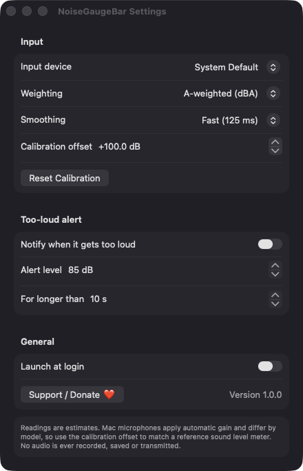

Live reading in the menu bar
A small level bar and the current dB value, refreshed about four times a second. The popover adds a large number and a word: Quiet, Conversation, Busy or Loud.
Open source · macOS 14+ · Universal binary · System Monitoring
NoiseGaugeBar puts a live decibel reading in your menu bar. Click it for a five-minute history graph, Min/Avg/Max stats and an optional too-loud alert.
Free & MIT licensed · Apple Silicon & Intel · Latest release

Features
Everything runs natively on your Mac, with no accounts, no servers and no recorded audio.
A small level bar and the current dB value, refreshed about four times a second. The popover adds a large number and a word: Quiet, Conversation, Busy or Loud.
See the last 1200 samples with grid lines and a dashed line at your alert level. Min, Avg and Max since start sit below, with a Reset button.
Choose A-weighted or unweighted readings and Fast (125 ms) or Slow (1 s) smoothing. Adjust the calibration offset in 0.5 dB steps to match a reference meter.
Get a notification when the level stays above your threshold (default 85 dB) for a set number of seconds. A 3-minute cooldown prevents repeats, and the alert is off by default.
Audio is analysed in memory and never recorded, saved or transmitted. The app makes no network connections.
Pick a specific input device or follow the system default. Measuring pauses while the Mac sleeps and resumes on wake.
Screenshots
Install
NoiseGaugeBar is open source and not notarized with a paid Apple Developer ID, so macOS needs one extra step the first time.
xattr -cr /Applications/NoiseGaugeBar.app
Download
Free, forever. Built for macOS 14 Sonoma or newer, Apple Silicon and Intel.
Not notarized: on first launch right-click NoiseGaugeBar.app → Open.
FAQ
Yes. It is released under the MIT license, with no ads, accounts or paid tiers. The full source is on GitHub, and you can build it yourself with Xcode.
Microphone access is required to measure the room. Notifications are requested only if you turn on the too-loud alert, and a login item is used only if you enable Launch at login. It needs no Accessibility or Screen Recording access.
Audio is never recorded or saved. Your settings are stored locally in macOS preferences on your Mac, and the history graph lives in memory only and is cleared when you quit.
Notarization requires a paid Apple Developer account, which this free project does not have. Right-click the app and choose Open once to run it, or build it from source.
Support ❤️
NoiseGaugeBar is a free, open-source alternative to paid utilities. If it earns a spot on your Mac, a coffee keeps the updates coming.
☕ Support Or on Ko-fi